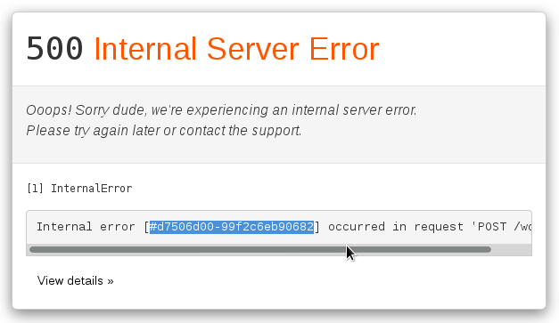
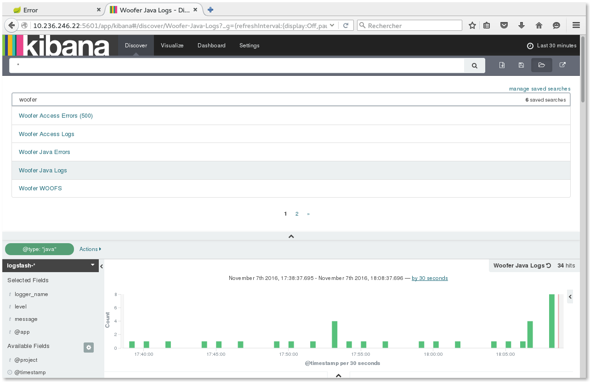
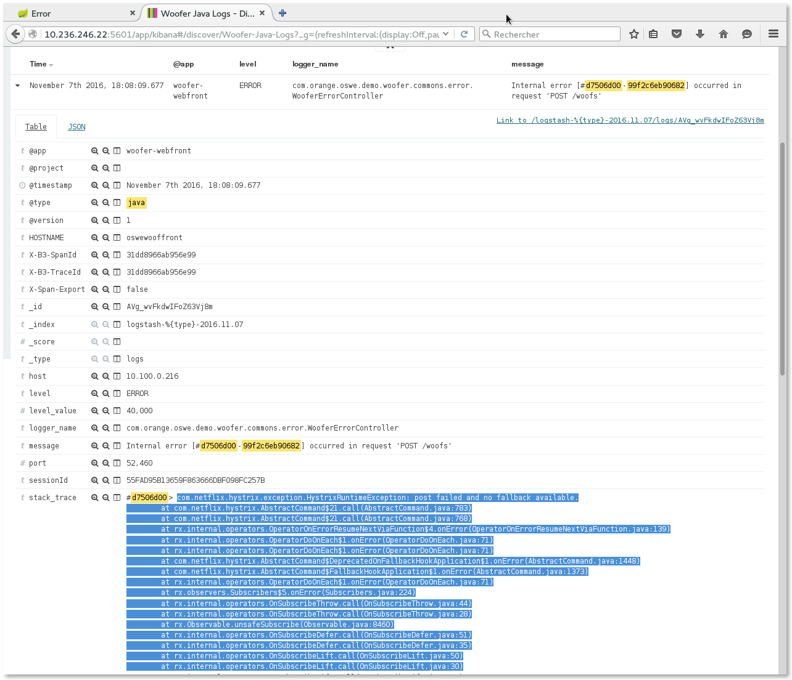
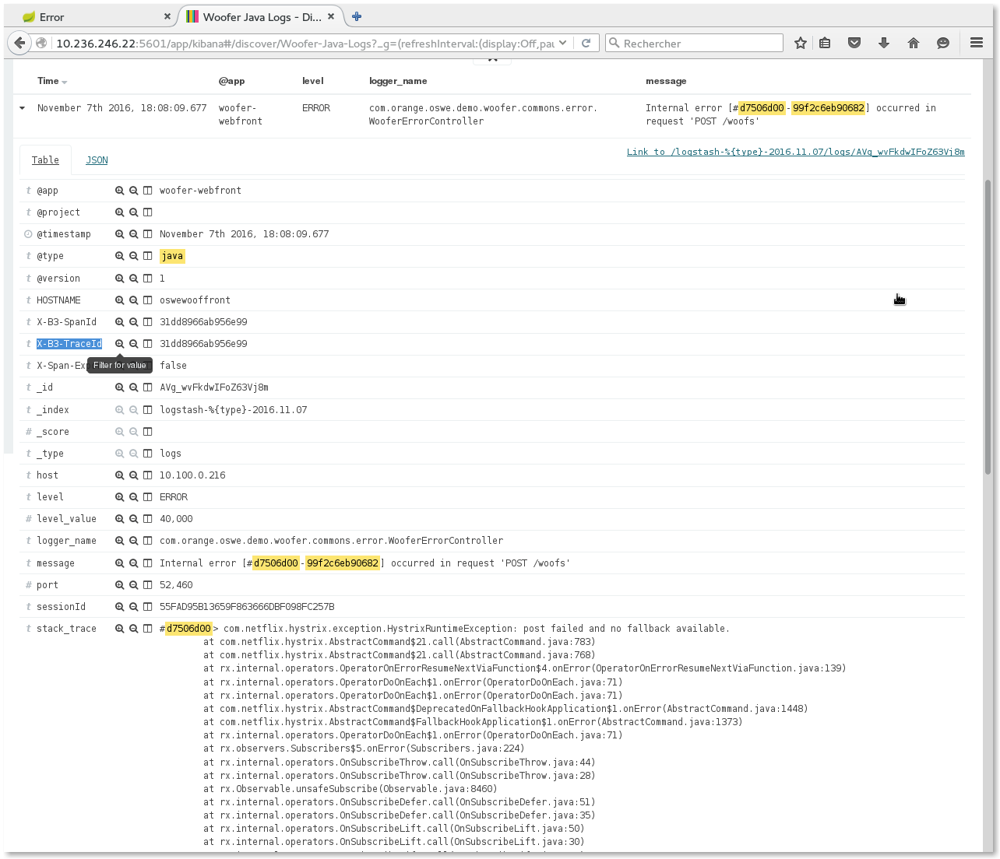
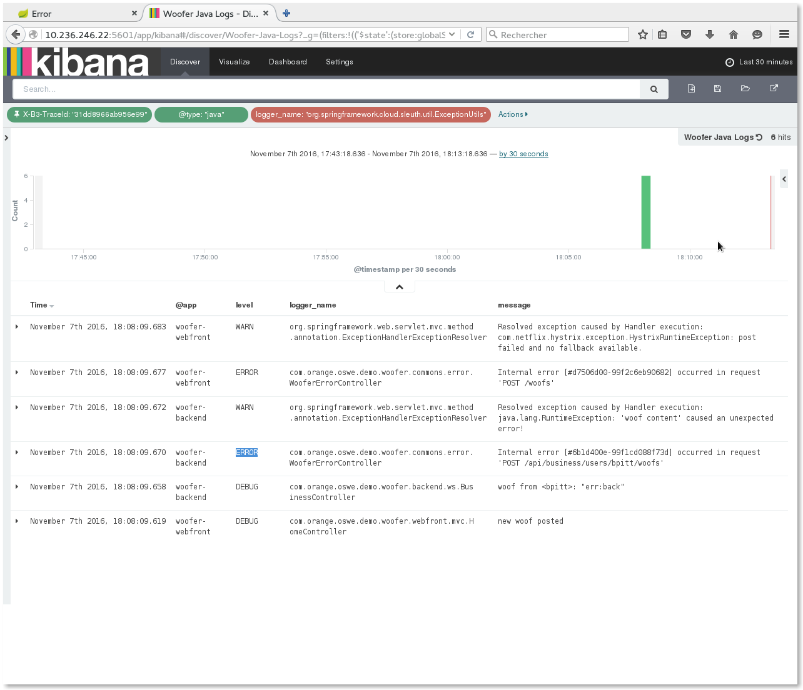
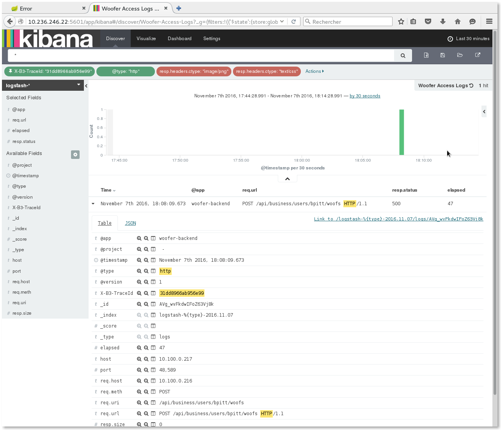

Incident Analysis with ELK
This chapter explains how errors can be traced and analyzed from the application to Kibana.
Generate an internal error
- Login to Woofer,
- Post a woof that contains the ''err:back'' text,
- You should get an error page: 
- Copy the error unique ID (
#d7506d00-99f2c6eb90682in above example).
Retrieve the complete stack trace
- Go to Kibana,
- Open the Woofer Java logs saved search, 
- Paste the error unique ID in the search input field and press
RETURN,
- You should get the originating error. Expand it, and you get the complete stack trace ! 
Filter logs from the request
If the stack trace is not enough to analyze the issue and if you need to know what was processed previously during the request, you may filter logs
by X-B3-TraceId (unique treatment ID generated by Spring Cloud Sleuth).
- click the
+magnifier icon on theX-B3-TraceIdfield: that will add theX-B3-TraceId: "xxxxxxxx"to the current query,  - clear the Kibana search input field and press
RETURN, - You should now see ALL Java logs holding this trace ID (i.e. all logs produced during the processing of this treatment).
By the way, notice in the @app column that traces originate both from
woofer-webfrontandwoofer-backendcomponents, for the same trace... 
Retrieve the access log(s)
Let's notice that - thanks to our logging configuration - the X-B3-TraceId is also logged in access logs: you can also find the
access logs with complete details if required.
Here is how to retrieve it from previous step:
- pin the
X-B3-TraceId: "xxxxxxxx"filter, - Open the Woofer access logs saved search,
- You should now see all access logs from every component with this trace ID: 
NOTE: Actually we get only the access log from woofer-backend because - for technical reasons - we could not have the woofer-webfront embedded
Tomcat catch the original X-B3-TraceId. Only subsequent Tomcats do...
Filter logs by the session or by user
Similarly to filtering logs by X-B3-TraceId, you may also filter them by sessionId (to analyze the complete user activity during his JEE session),
or even by userId (complete user activity over time).